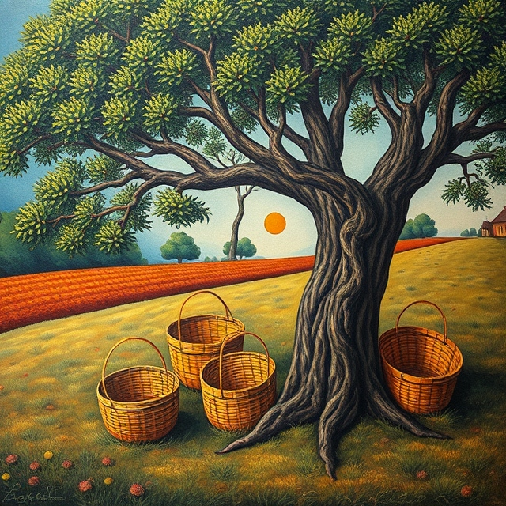
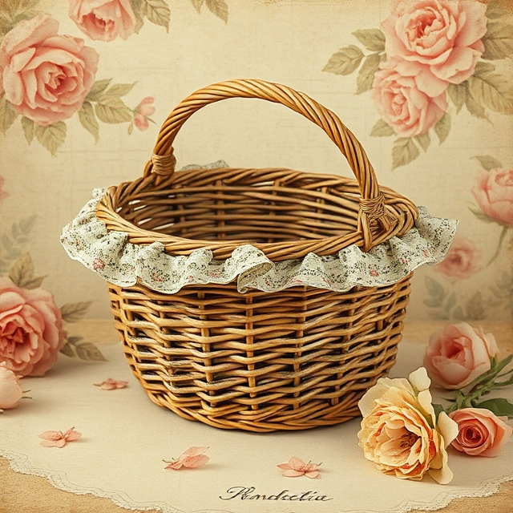
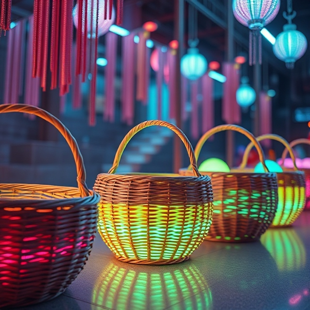

I panari salentini sono cesti intrecciati a mano, simbolo dell’artigianato e della cultura contadina del Salento. Un tempo indispensabili per la raccolta di olive, frutta e ortaggi, rappresentano oggi un pezzo unico di tradizione locale e artigianato autentico.
Questi cesti sono noti per la loro leggerezza e resistenza. La loro forma caratteristica, con il manico arcuato e la struttura robusta, li rendeva ideali per il lavoro nei campi, mentre le versioni più grandi, chiamate "cofine", venivano usate per trasportare maggiori quantità di prodotti agricoli.
Con l’evoluzione dei tempi, i panari hanno perso il loro uso pratico, trasformandosi in oggetti decorativi apprezzati per la loro bellezza e unicità, rappresentando un legame tangibile con il passato e la tradizione salentina.
Scopri la bellezza dei panari salentini
Come sono fatti
I panari sono realizzati utilizzando materiali naturali facilmente reperibili nella macchia mediterranea, come canne, giunchi, restinco e rami d’ulivo selvatico. Questi materiali venivano scelti con cura dai panarari, che conoscevano a fondo le qualità di ogni elemento.
La produzione segue un processo complesso che richiede tempo e grande abilità. Si parte dalla raccolta delle canne, che vengono essiccate, levigate e tagliate alla lunghezza desiderata. I rami d’ulivo, noti come "vinchi", vengono trattati per diventare flessibili e resistenti, pronti per l’intreccio.
L’intreccio inizia con la creazione di una base, formata da vinchi disposti a croce o a raggi. Su questa struttura vengono aggiunti cerchi concentrici di canne intrecciate, lavorando gradualmente verso l’esterno. Il bordo e il manico richiedono particolare attenzione, con tecniche più elaborate per garantire robustezza e un’estetica raffinata.
Ogni panaro è unico, riflettendo l’esperienza e la creatività dell’artigiano. La lavorazione manuale, interamente senza macchinari, può durare diverse ore o persino giorni, a seconda della complessità del cesto.

Panaro Tradizionale
Questo panaro intrecciato a mano rappresenta l'essenza della tradizione salentina. Realizzato con materiali naturali come giunco e rami d’ulivo, è ideale per chi desidera un pezzo autentico e funzionale dell'artigianato locale.

Panaro Decorativo
Un cesto unico che coniuga arte e tradizione. Perfetto per arredare con stile rustico qualsiasi ambiente, aggiungendo calore e autenticità grazie ai suoi dettagli realizzati a mano.

Panaro Moderno
Questo modello reinterpreta il design tradizionale con linee più moderne e minimaliste. Adatto per case contemporanee che vogliono mantenere un legame con la cultura artigianale.
Curiosità sui Panari
I panari salentini sono molto più che semplici cesti: rappresentano una tradizione antica che ha resistito nel tempo. Ogni villaggio del Salento aveva stili distintivi, legati alla cultura e alle esigenze locali. Ad esempio, i cesti più piccoli, detti "cofineddhe", erano utilizzati per alimenti delicati, mentre i "cannizzi" servivano per essiccare pomodori e fichi al sole.
La lavorazione dei panari era tradizionalmente affidata agli uomini, poiché richiedeva forza fisica per l’intreccio. Le donne, invece, si occupavano spesso di creare prodotti più leggeri, come piccoli cesti o decorazioni. Questa divisione del lavoro rifletteva la complementarità delle mansioni nella comunità contadina.
Oggi, i panari sono considerati prodotti d’eccellenza dell’artigianato salentino e sono molto ricercati da chi desidera portare a casa un pezzo autentico di questa terra. Li trovate principalmente nei mercatini estivi o nelle botteghe artigiane, dove è possibile osservare i pochi maestri rimasti all’opera.
Oltre ai panari, con le stesse tecniche e materiali si creano anfore, trulli in miniatura e altri oggetti decorativi che portano un tocco di salentinità nelle case di chi li acquista.